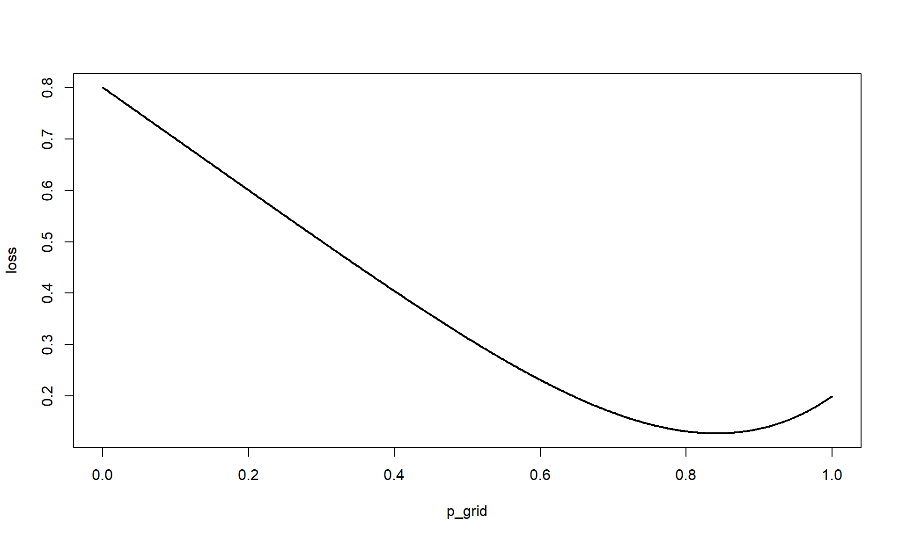
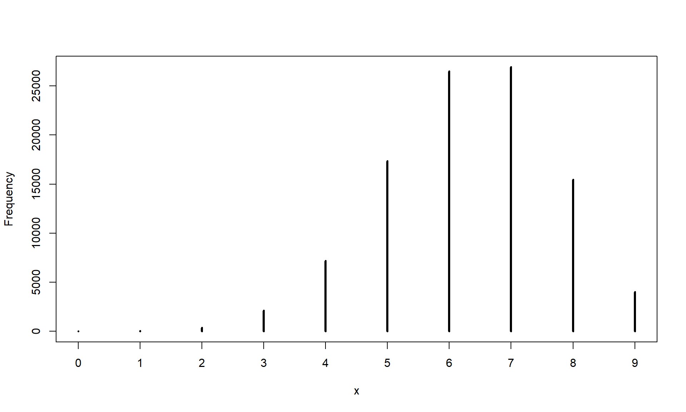

Code
library(rethinking)library(rethinking)n_grid <- 1e3
p_grid <- seq(0,1,length.out=n_grid)
prob_p <- rep(1,n_grid)
prob_data <- dbinom(6,9,p_grid)
posterior <- prob_data * prob_p
posterior <- posterior / sum(posterior)
samps <- sample(p_grid, prob=posterior, size=1e4, replace=T)
par(mfrow=c(1,2))
plot(samps)
dens(samps)
sample(posterior, replace=T), this is because the posterior is literally giving the values of \(p(\text{param}|\text{data})\), which is not the usual samples we get from mcmc.posterior[p_grid < 0.5] |> sum()[1] 0.1718746(samps < 0.5) |> mean()[1] 0.1697n_grid <- 1e3
p_grid <- seq(0,1,length.out=n_grid)
prob_p <- rep(1,n_grid)
prob_data <- dbinom(3,3,p_grid)
posterior <- prob_data * prob_p
posterior <- posterior / sum(posterior)
samps <- sample(p_grid, prob=posterior, size=1e4, replace=T)
pi <- PI(samps, prob=0.5)
x_for_pi_graph <- p_grid[p_grid >= pi[1] & p_grid <= pi[2]]
y_for_pi_graph <- posterior[p_grid >= pi[1] & p_grid <= pi[2]]
hpdi <- HPDI(samps, prob=0.5)
x_for_hpdi_graph <- p_grid[p_grid >= hpdi[1] & p_grid <= hpdi[2]]
y_for_hpdi_graph <- posterior[p_grid >= hpdi[1] & p_grid <= hpdi[2]]
par(mfrow=c(1,2))
plot(p_grid, posterior, type = 'l', lwd=2, main='50% PI')
polygon(c(x_for_pi_graph, rev(x_for_pi_graph)), c(rep(0, length(x_for_pi_graph)), rev(y_for_pi_graph)), col='darkblue')
plot(p_grid, posterior, type = 'l', lwd=2, main='50% HPDI')
polygon(c(x_for_hpdi_graph, rev(x_for_hpdi_graph)), c(rep(0, length(y_for_hpdi_graph)), rev(y_for_hpdi_graph)), col='darkblue')Thus, \(E[|p^\prime - p|] = \int |p^\prime - p| \cdot Pr(p|\text{data}) dp\)
Calculated if \(p^\prime=0.5\) as:
sum(posterior*abs(0.5 - p_grid))[1] 0.3128752We can do all at once with vapply:
loss <- vapply(p_grid, \(x) sum(posterior*abs(x - p_grid)), numeric(1))
plot(p_grid, loss, type='l', lwd=2)
cat('Median: ', median(samps), 'Lowest loss', p_grid[which.min(loss)])Median: 0.8398398 Lowest loss 0.8408408dummy_w <- rbinom(1e5, 9, 0.7)
simplehist(dummy_w)
Let’s try generating some new data, one where we hold \(p\) at the median and another wher we allow the uncertainty of the parameter to propagate. Note, this is using the old \(W=6, N=9\) samples.
n_grid <- 1e3
p_grid <- seq(0,1,length.out=n_grid)
prob_p <- rep(1,n_grid)
prob_data <- dbinom(6,9,p_grid)
posterior <- prob_data * prob_p
posterior <- posterior / sum(posterior)
samps <- sample(p_grid, prob=posterior, size=1e4, replace=T)par(mfrow=c(1,2))
rbinom(length(samps), size=9, prob=median(samps)) |> simplehist()
rbinom(length(samps), size=9, prob=samps) |> simplehist()
The posterior predictive on the right is much wider as it takes into account the parameter uncertainty.
Let’s spend some time thinking about what the posterior predictive is, as it will be crucial moving forwad. But first, I need to show you one of the great consequences of working with samples. That is if I have samples \((\alpha, \beta) \sim P(\alpha, \beta)\), I can very easily marginalize over the joint distribution by ignoring one of the parameters. It’s crazy, but it actually works.
That is, if I want plot the marginal distribution of \(P(\alpha) = \int P(\alpha, \beta) d\beta\), I can just plot the samples I have just plot the \(\alpha\) samples I have from my \((\alpha, \beta)\) samples.
Now, the posterior predictive distribution for data \(d\) with parameters \(\theta\) is given by \(p(\tilde{d}|d) = \int p(\tilde{d}|\theta) p(\theta|d) d\theta\). There is a \(d\) hidden in the conditional of \(p(\tilde{d}|\theta)\), but it gets dropped since \(d\) acts on \(\tilde{d}\) through \(\theta\) in the generative graph. That is, \(d\) and \(\tilde{d}\) are conditionally independent give \(\theta\).
We can actually express the integrand as \(p(\tilde{d}|\theta,d) p(\theta|d) = p(\tilde{d}, \theta|d)\). We can actually get this joint distribution from something very akin to Gibbs sampling.
Gibbs sampling states that we can obtain samples from the joint distribution \(p(\theta_1, \theta_2)\) if we can draw samples from the conditional distributions \(p(\theta_2 | \theta_1)\) and \(p(\theta_2 | \theta_1)\). We essentaily draw a theta from one of the conditionals, and plug it back into the other, pinging back and forth. For our present case, we are drawing samples from our posterior \(p(\theta |d)\) and plugging them into our next conditional \(p(\tilde{d}|\theta)\), doing this iteratively produces samples from the joint, where we can then ignore samples for \(\theta\) and obtain draws from the posterior predictive \(p(\sim{d}|d)\).
Now, you might have noticed that \(p(\theta |d)\) doesn’t have \(\tilde{d}\) in its conditional. In truth, it doesn’t actually matter since \(\theta\) is independent of the new data drawn. In the generative graph, there is no information that flows form \(\tilde{d}\) back into \(\theta\). Thus, we are fine to ignore it when drawing from \(p(\theta |d)\), the posterior.